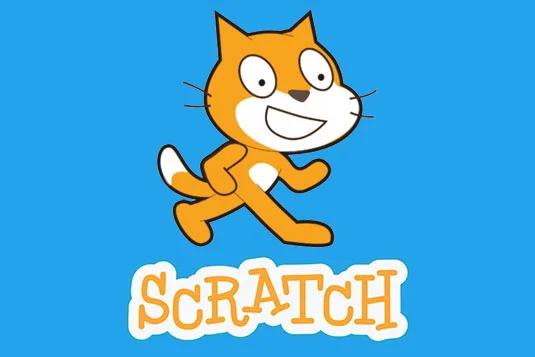

Jogos do Scratch
Jogos desenvolvidos a partir do software Scratch, foram feitos por meio de programação em blocos. Com muita criatividade, obtivemos resultados incríveis e diversificados.
 ˇGuitar Hero
O Projeto Makey Makey, é um jogo criado no Scratch baseado no Guitar Hero, foi desnvolvido pelos alunos Caio Henrique e Livia Cardia do 1ºano Informática, e é dividido em duas opções de jogo sendo elas:
Opção 1 - Placa Makey Makey, Cabo USB, Cabos jacaré, Massinha de modelar
Opção 2 - utilizar setas:
Pra cima - Vermelho
Pra baixo - Amarelo
Direita - Azul
Esquerda - Verde
Jogos

Sonic e Mario - Robotinik Templo
Sonic e Mario - Robotinik Templo é um jogo multiplayer, com o objetivo de coletar emblemas e chegar até a porta.


Pokemon Infinite Fusion
Pokemon Infinite Fusion é um jogo de Pokemon, com o objetivo de ir juntando os pokemons que são iguais.


Minecraft 2D
Já imaginou jogar minecraft, só que com gráficos em 2 dimensões? No Minecraft 2D você terá essa incrível experiência.

Darkness
Darkness é um jogo simples e intuitivo, onde você tem que chegar ao final da fase sem tocar nos espinhos.